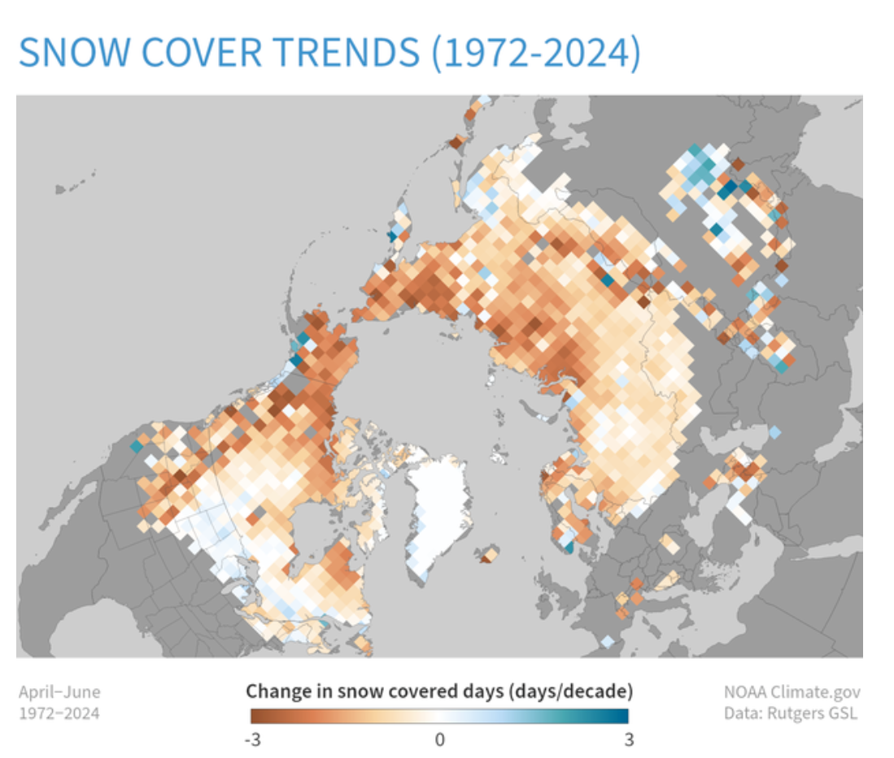

Greenhouse Gases

The heating influence of all human-produced greenhouse gases was 49 percent higher in 2022 than it was in 1990.
Learn moreArctic Sea Ice

Since 1979, the extent of ice covering the Arctic Ocean at the end of summer has shrunk by more than 40 percent.
Learn moreCarbon Dioxide

Atmospheric carbon dioxide has risen more than 50 percent since people began burning fossil fuels for energy.
Learn moreMountain Glaciers

The glaciers in a key reference network lost an average thickness of 94 feet between 1970 and 2023 (preliminary data).
Learn moreOcean Heat

The ocean is storing 91% of the excess heat from global warming, causing sea level rise, ice shelf retreat, and stress on marine life.
Learn moreSea Level

Sea level has risen 8-9 inches since 1880, and the rate of increase has accelerated over the satellite era.
Learn moreSpring Snow
Since the start of satellite observations in 1967, June snow cover has shrunk by 12.9 percent per decade.
Learn moreIncoming Sunlight
The sun's brightness does vary over time, but no changes have occurred that are big enough to cause observed global warming.
Learn more